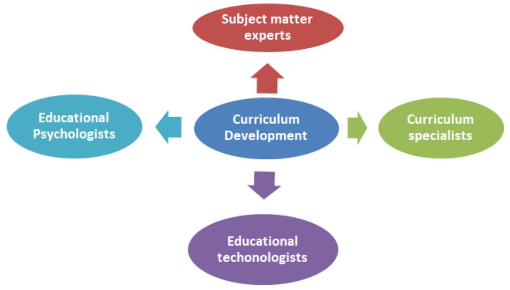

3.0 THEORIES,MODELS AND PRINCIPLES OF CURRICULUM DEVELOPMENT
3.1 CURRICULUM MODELS
3.1.1 What is a model?
It is a three dimensional representation of a person or thing or of a proposed structure, typically on a small scale than the original.
- Curriculum models are based on a body of theory about teaching and learning.
- They are targeted to needs and characteristics of a particular group of learners.
- They outline approaches, methods and procedures for implementation.
- Curriculum development theories and models provide concepts, issues, explanations, proportions and frameworks that give curriculum development directions.
3.1.2 CURRICULUM DEVELOPMENT THEORY
Can be said to be a formal set of ideas that are intended to explain the aelements and processes of curriculum development. A curriculum development model is a simple description of a curriculum development system using a diagram. Curriculum development theories and models provide foundations for curriculum development, implement and evaluation. They provide foundations for curriculum implementation review and construction.
3.1.3 RAIPH TYLER'S CURRICULUM THEORY AND MODEL
Ralph Tyler was an American scholar and educationist. In 1949, Tyler published his book; Basic Principles of curriculum and instructions.
Tyler identified four basic questions that should be answered by curriculum developers.
- What educational purposes should the school seek to attain.
- By purposes Tyler was referring to objectives.
- He indicated that curriculum planners should identify general objectives by gathering data from three sources:- Subject matter
- The learner
- Society
- What results is instructional objectives - What educational experiences can be provided that are likely to attain these purposes?
- Learning experiences had to take into account both the previous experiences and the perception that the learner brings to a situation. - How can these educational experiences be effectively organized?
- Tyler talked about the organization and sequencing of these experiences.
- He suggested that the ordering of the experiences had to be systematic so as to produce a maximum cumulative effect.
- A curriculum developer should look at the activities that should be given to learners in term I, II, and III and organize them for the realization of the set objectives. - How can we determine whether these purposes are being attained?
- The last question emphasizes the role of curriculum evaluation as an important element, in the curriculum development process.
- A curriculum developer has to consider the means, method and strategies that will be used to determine whether the desired purposes/objectives are being achieved or have been achieved.
Discussion of Tyler's curriculum theory and model.
- He put more emphasis on the objectives to guide curriculum development.
- According to him the sources of curriculum objectives are:- A study of the learners needs in relation to the needs of the society.
- A study of contemporary issues and society's life.
- Seeking suggestions of subject specialists through consultation.
- Ralph Tyler's model provided the basis for other curriculum development models. However it is considered simplistic as it ignored the complex process involved in curriculum development.
- It does not offer the relationship between various curriculum elements.
- It was found to deal shallowly with the issue of curriculum evaluation which is an important aspect of curriculum development.
Elements of the curriculum
According to Ralph W. Tyler, a prominent curriculum specialist, the four elements of the curriculum are:
- Selection of objectives
- Selection of learning experiences
- Organization of learning experiences
- Evaluation process
3.1.4 HILDA TABA'S CURRICULUM THEORY AND MODEL (1962)
Hilda Taba was born in 1902, she was a curriculum theorist, Educator and reformer. Hilda Taba believed that those who teach curriculum should participate in developing it. She believes that teachers should develop curriculum and that curriculum should not be handed down from higher authorities. She advocated what has been termed as the "grass-root approach."
She advocated that teachers take an inductive approach to curriculum development starting with specific s and building to a general design -as opposed to Ralph Tylers more traditional deductive approach starting from general to specifics.
Hilda Taba noted seven major steps in the process of developing a curriculum.
- Diagnosis of needs
- Formulation of objectives
- Selection of contents
- Organization of contents
- Selection of learning experiences
- Organization of learning experiences
- Evaluation and means of evaluation
i) Diagnosis of needs
The teacher starts the process by identifying the needs of the students for whom the curriculum is to be planned.
ii) Formulation of objectives.
Objectives formulation should encompass the following areas:
- Concepts or ideas to be learned.
- Attitudes, sensitivities, and feelings to be developed.
- Ways of thinking to be reinforced, strengthened or initiated
- Habits and skills to be mastered.
iii) Selection of Content
The objectives selected or created suggest the subject matter or content of the curriculum unit subject.
- Subject matter should be related to the grade level of the student.
iv) Organization of Content
- A teacher cannot just select content, but must organize it in some type of sequences taking into consideration the maturity of the learners, their academic achievement, and their interests.
v) Selection of learning experiences
Content must be presented to pupils or pupils must engage in an interaction with the content. To select learning experiences, Taba suggests that the teacher should ask a number of questions. For example;
- Is the experience appropriate for learning the main ideas?
- Does the experience promote "Active learning?"
- Is the experience appropriate to the students' maturity level?
Taba also felt that learning experiences should reflect a variety of experiences, including, "reading, writing, observing, doing research, analyzing, discussing, tabulating, painting, constructing and dramatizing.
vi) Organization of learning experiences.
Taba outlines a sequence for organizing learning experiences: -
- Introduction
- Development
- Generalization
- Application or summary
Introduction involves developing student interest and proving diagnostic evidence for the teacher. Development or study consists learning activities that are designed to develop various aspects of the subject and to provide needed factual material. These activities include "reading, research, analysis of data, committee work and study of various kinds. Generalization refers to students attempts to put ideas together. E.g comparing and contrasting and exploration of the reasons for similarities and differences. Application or summary is the stage at which the student applies generalization to a larger framework.
vii) Evaluation and Means of Evaluation
Involves determining whether objectives have been met, diagnosis of the curriculum plan, and assessment of any changes in student behavior.
3.1.5 OLUOCH'S MODEL OF CURRICULUM DEVELOPMENT (1982).
Oluoch's model of curriculum development goes a long toward trying to solve the fundamental problem; that much of what is taught in not learned and much of what is presented and tested is not assimilated. Oluoch explains curriculum as all that is planned to enable the learner to acquire and develop desired knowledge, skills, values and attitude.
Olouch wrote in the context of the Kenya situation. Although most people think of education as the same as going to school, he believed that this was wrong. He defined education in a much broader way: Education is the process of acquiring and developing desired knowledge, skills and attitudes (Oluoch, 1982). This definition is superior to many others as it suggests that education is continuous across the life span and can occur outside school settings.
According to Olouch, curriculum came from the Roman word racecourse, a tract followed by horses in a race. Curriculum came to be considered a course of study followed by a school or some other teaching institution and also an individualized syllabus in educational institution. He believes that curriculum should be defined as everything that is planned by an educational institution to help the students learn whatever it is that the institution would want them to learn (1982, p. 7). It includes the formal course of study, extra-curricular activities and other informal activities within the school environment. Olouch developed a conceptual framework of the school curriculum.
Olouch had the objectives for the learner (what is desired that the learners' should attain), the learning activities (how the desired objectives are to be accomplished, including the learning activities within the content and the student assessment (evaluation of the learning outcome).
We also note that he includes three different dimensions of school curriculum.
- Formal dimension: Refers to the learning activities within or outside of classrooms and schools that are normally undertaken by students as formal class work.
- Nonformal dimension: Refers to learning activities organised in a less rigid manner. The students are not formally grouped as for class work, but group themselves according to interests, aptitude and ages. They may occur in or outside classrooms and schools, and are part of the broad comprehensive education programme made available to learners.
- Informal dimension: Consists of the guided aspects of learning activities that go on in the school all the time, such as interactions. Although these represent part of the hidden curriculum of schools, it is only the activities that relate to the planned aspects of the environment that count as informal learning activities. The extent of stimulation provided by learning resources within the learning environment is an example of the informal dimension.
Elements of school curriculum according to Oluoch
- Goals and objectives of the curriculum
- Learning opportunities through which the goals and the objectives of the curriculum should be achieved
- The evaluation process, to find out if the goals and objectives previously set have been achieved and if they have, to what degree. 1 these elements are appropriate to all dimensions of the school curriculum.
Components of Curriculum Development.
Seven major components of for curriculum development can be identified. These are;
- Needs assessment.
- Formulation of a curriculum development project.
- Curriculum designing.
- Personnel training.
- Development of curriculum materials and equipment.
- Implementation.
- Project evaluation.
1. Needs assessment.
This is a method or technique for identifying educational objectives that most need to be accomplished in a given instructional situation. It is an essential component of curriculum development in the determination as precise as possible as of what is that needs improving. The needs to be assessed may include the societal and national needs of education. The component establishes the base of curriculum development.
2. Formulation of curriculum development project.
This component involves statement of goals and objectives of the curriculum development project, approximating the time it would take before completion and how many individuals are required and also the financial amount required. In this way all the necessary resources will be committed for the entire duration of the project.
3. Curriculum designing.
After extraction of information and identification of the learner, designing the curriculum begins. Before designing the content, there is need to be clear objectives. Stating the specific learning outcomes expected that would be in need for figuring out these learning outcomes. Curriculum designing involves deciding what part in the effort to realize intended learning outcomes. Therefore, is important that detailed curriculum designs be prepared and reviewed from time to time as project proceeds.
4. Personnel training.
For the success of curriculum development procedure, teachers have to be included and they should understand and accept the ideas contained in the curriculum being proposed or implemented. All the categories of personnel should be trained to understand and accept the ideas of the materials forming part of the new curriculum.
5. Development of the curricular materials and equipment.
These materials are designed to help the teacher grasp the knowledge and to implement the ideas contained in the new curriculum. These materials include the syllabuses, books and mass media programs for school teachers and students. Similarity in preparation of these materials should be of importance for the development of relevant curriculum materials.
6. Implementation.
This is the interaction of the learners with the teachers, ideas, materials and equipment with a view to achieving the goals of the new curriculum. Organization of familiarization programs for educators, parents and other members of the society should be important. The implementation component happens after all the above components have been put in place.
7. Project evaluation.
After the new curriculum has been implemented, it should be analyzed if its headed towards the stated goals and objectives and to make appropriate adjustments if otherwise.
These various dimensions are useful for us to remember since they suggest that we need to plan not just for the formal classroom learning activities.
Olouch described various stages to be used in the process of curriculum development.
- Information gathering: This is a process of collecting information about the need for and feasibility of the curriculum development process. It should address the issues of what information should be collected, from whom should it be gathered, who should collect it, who should coordinate this process and what should it be used for.
- Formulating the curriculum project: This is the process of looking if the curriculum project is desirable and also feasible, and if it is then the curriculum development is described within a written project report.
- Planning the curriculum: This component involves considering each dimension of the school curriculum carefully in reference to:
- Understanding and stating the goals and objectives of the curriculum,
- Determining, organising and stating the necessary learning objectives
- Determining and stating the methods that will be used in assessing the progress and achievement of the learners.
- Selection and preparation of materials and equipment: In this component the requirements for the materials and equipment to be used in the curriculum are identified and costed. At this point who will prepare the new materials and how they are to be prepared or made are also discussed so that they will be ready for the new curriculum.
- Curriculum Try-out: In this component the curriculum, the materials and the equipment are piloted. They are used in a few schools to see if the desired results occur. If not, revisions are made before the implementation.
- Curriculum Implementation: At this point the new curriculum is used in the various schools. The phase may require teacher in-servicing or orienting to the new curriculum, provision of support services and facilities and introduction of possible organisational changes with the schools and districts educational systems. It will be important to inform the general public about the new curriculum and to address their concerns.
- Curriculum Project Evaluation: In this component the curriculum project is evaluated, and this evaluation focuses on the planning phase, the implementation phase and when it is completed after a specified period of time. This component should be focused on clearly identifying what exactly is to be evaluated, why it is to be evaluated and how it is to be measured.
SHORTCOMINGS OF OLUOCH'S MODEL OF CURRICULUM DEVELOPMENT.
Despite the major positivism towards the success of Oluoch's model of curriculum development,it still faces a number of shortcomings; -
- It is bulky and contains a lot of processes. The model involves a lot of steps and actions that have to be and undertaken which may be bulky and tiring. This may bring monotony and confusion during the development and implementation of the curriculum.
- Some of the procedures and guidelines that are suggested in the model are technical and complex and not every teacher can perform.
- There is a strong tendency in the literature about behavioral objectives in curriculum design to make the assumption that the objectives that can be defined behaviorally, the objectives cannot be easily assessed, and these objectives do not form the important objectives for a school curriculum. The corollary also seems to be accepted. If it seems impossible to detect and asses a specific learning outcome, it probably isn't important.
- If identification of all worthwhile outcomes in behavioral terms comes to be commonly accepted and expected, then it is inevitable that over time curriculum will tend to emphasize those elements which have been identified. Important outcomes which are detected only with great difficulty and which are translated only rarely into behavioral terms tend to atrophy. They disappear from curriculum because much time is spent on the allotted teaching explicitly for the more readily specifiable learning to which have been directed.
- The model carries a lot of processes and guidelines through certain people. This processes of research, collection, analysis and implementations which need a lot of financing. Project people, and researchers have to be paid and curriculum implemented.
- Research, collection of data, analysis, implementation is time consuming and therefore it might take a long time before a curriculum is completely developed. The more the time is taken, the more is the need for more money to finance it.
RELEVANCE TO CURRICULUM DEVELOPMENT IN KENYA.
The model provides guidelines for the contemporary development and improve of the curriculum in Kenya today. The setting up of an organization for curriculum development in Kenya is based on the guidelines provided by the model which have entirely helped for the development of a competent and all round curriculum.
The model has recommended that a procedure to be followed in developing a school curriculum in Kenya which should be based on the principles; - Curriculum development should be based on the outcomes. Should concern itself with all curriculum dimensions and elements. Be a team effort.: all these principles through the Kenya Institute of Curriculum Development have been implemented and has largely help in the development of the major curriculums and organized the basis of well formulated projects making the development simpler and procedural.
The model has made possible reorganization of the formerly Kenya Institute of Education to currently Kenya Institute of Curriculum Development which is the organization in the country with the responsibility of curriculum development in school education. This changes are in the aspect of functions, the control, the panels and the structure of the staff of the institute. This has made the Kenya institute of curriculum development to be more effective in coming up with the competent and reliable curriculums.
Each subject area or curriculum area has subject pane and each of them with a related teacher for educational research and evaluation matters in that subject. These panels interact as much as possible to bring about coordination in education in the country. The panel's main work is to coordinate the content and its relevance in the subject area. The concept of personnel training before the implementation of a curriculum in the model is relevantly visible in the new curriculum. Through seminars and conferences, teachers have been made to understand the changes and ideas in the new curriculum about to be implemented. Each category of teachers has been trained about the content and the teaching and learning activities they are to use for the accomplishment and the success of the new 2.6.3.3 curriculum in Kenya.
3.2 Principle of Curriculum Construction
In curriculum development, we think about the type of learning experiences to be given to a child at various age and grade levels. It needs systematic and sequential planning to widen the sphere of the learning experience at each level by keeping in view the principles of integration and correlation. The curriculum is usually concerned with two questions. What are the principles you will follow when construction curriculum for your children? Principles are guiding rules. They are the rules, which will guide you when constructing, or designing or making a curriculum. The principles include:
- Suitability to the age and mental level of the children
- What is to be given to the children in the form of learning experiences at a particular age and grade level should suit their age and mental development
- The capacity for understanding, how children grow with age. The content of the study in any subject should be formed to suit their mental ability.
- According to the specific interests of students
- Children will be able to learn better in fields where they have special tastes and inclination of the mind.
- It is also found that at different stages of age groups, children have different interest patterns.
- Interests of children also change according to circumstances and situations.
- Therefore learning experiences should be designed to suit the interests and tastes of the age group of students.
- The curriculum should be environmentally centered
- The content of the learning experiences for children should be linked with the needs of the environment in which they live.
- For example, children from rural areas can understand and grasp easily the information which is directly concerned with their experiences in their own rural environment.
- The same thing applies to children in a various environments like urban areas, hilly areas, etc.
- The principle of the comprehensive curriculum
- The curriculum must have the necessary details. List of topics to be covered does not solve the purpose.
- Both teachers and students should know clearly what is expected of them, what is the beginning and what is the end of the topic for the particular class.
- Material, aids, activities, life situations etc. should be listed in the curriculum.
- Principle of co-relation
- The curriculum should be such that all the subjects are correlated with each other.
- While designing the curriculum, it must be kept in mind that the subject matter of various subjects has some relation to each other so that they help the child eventually.
- The principle of practical work
- Children are very active by nature.
- They like new things and can learn more by doing or by activity method.
- Therefore curriculum should be designed in such a way that it provides maximum opportunity to the child for practical work with the help of concrete things.
- Principle of flexibility
- Instead of being rigid curriculum should show the sign of flexibility.
- The organization of the curriculum should be on the basis of individual differences as every child is different from the other.
- Apart from these conditions of society go on changing, therefore, the curriculum must be flexible enough to address the needs as aspirations of the society.
- Principle of forward-looking
- This principle asks for the inclusion of those topics, content and learning experiences that may prove helpful to the students in leading their future life in a proper way.
- The principle of consultation with teachers
- Teachers play a key role in the implementation of the school curriculum of any grade or stage.
- It is therefore quite essential to seek the proper involvement of the teachers in the construction and development of the school curriculum.
- The principle of the joint venture
It is necessarily a joint venture where various experts are involved like educational psychologists, educational technologists, curriculum specialists, evaluation specialists, teachers, subject matter experts etc.
- Principle of Child Centeredness
When designing a curriculum for your children, you should keep in view the child's abilities, interests and needs.
- Principle of actual Participation
The curriculum should provide opportunities for actual participation of children. There should be activities for children to do.
- Principle of Co-Ordination and Integration
The curriculum should provide fullness of experience i.e. there should be maximum co-ordination and integration between curricular and co-curricular activities. Curricular activities refer to the activities planned and organized in classroom and co-curricular activities refer to activities done outside the classroom.
- Principle of Community Centeredness
Education should prepare a child to fit in his/her community. This is possible only when the curriculum is central on the community of the child that is the content and activities of the curriculum should originate from the culture of the child.
- Principle of Conservation
Curriculum should include activities and experiences, which will help in the conservation of past heritage. Heritage means history and culture. Curriculum should preserve what is useful and add what is helpful in solving the life problems.
- Principle of Variety and Elasticity
Curriculum should provide a variety of activities because of individual differences and freedom of choice. Children are different in terms of abilities, interests and age. For children to learn best, there should be a variety of activities. Curriculum should also be flexible and not rigid and should accommodate necessary changes.
- Principle of Social
Curriculum should meet the needs of a society i.e. should cater for the aspirations of a society. The curriculum should provide knowledge and skills to make children useful in their society.
- Principles of Activity Centeredness
Children learn by doing. Unless they do activities they will never learn. Curriculum should provide a variety of activities for children to do. The activities should be selected according to the abilities, interests and age of children.
- Principle of Creativity
Curriculum should promote or develop children's creativity. It should provide activities, which will enable children to exercise their environments according to the needs of the time.
- Principle of Utility
Curriculum should have value to children and society or community of the child. It should be of practical use to children. The curriculum should give due emphasis to work experience. It should provide knowledge and skills children need to be useful to themselves, families, communities and to the nation (Kenya).
- The principle of availability of time and other resources
To answer these questions we should now discuss the principles of curriculum development.
Curriculum is the means to realize the outcomes of the educational objectives of the school. Implementation of the curriculum is equally important as curriculum construction. While developing curriculum experts should also keep its implementation in mind. They should be aware of the conditions of the schools and possible availability of time and resources available.
